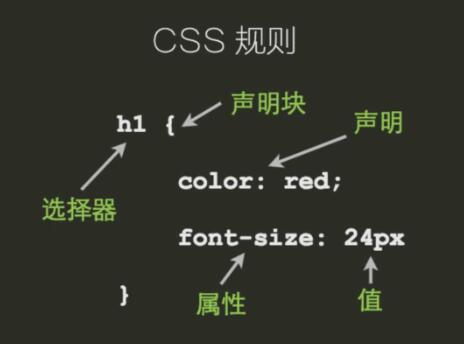

css概念与简单选择器
css规则

代码风格
1 | h1{color:red;font-size:14px;} |
1 | h1{ |
使用css
1 | <!-- 外链 --> |
1 | <!-- 嵌入 --> |
1 | <!-- 内联 --> |
注释
1 | /* 设置按钮宽度 */ |
简单选择器
选择器用来从页面中选择元素，以给他们定义样式
通配选择器
1 | /* 匹配所有元素 */ |
标签选择器
1 | /* 匹配所有p元素 */ |
id 选择器
1 | <p id="example">Hello world</p> |
类选择器
1 | <!-- 可以给一个元素指定多个class,用空格隔开 --> |
属性选择器
拥有某个属性
1 | <input name="username" value="zhao" disabled> |
某个属性的值是password
1 | <input name="password" value=""> |
属性的值包含height
1 | <p> |
属性的值以什么字段开头和结尾
1 | <p><a href="#top">回到顶部</a></p> |
1 | <p>你可以<a href="a.jpg">查看原图</a></p> |
属性的值在任意位置都可以用*
1 | <i class="icon-user">用户</i> |
伪类选择器
基于DOM之外的信息去(比如根据用户和网页的交互状态)选择元素
1 | <!-- 未访问过的连接 --> |
选择器组合
直接组合 EF
1 | <p class="warning">警告</p> |
组合形式(标签选择器在前)
- E[for=”bar”]
- E.warning
- E#myid
- #myid.warning
- .warning[foo=”bar”]
后代组合 E F
1 | <article> |
同时为一组选择器定义样式 E,F,B
1 | body,h1,h2,h3{ |